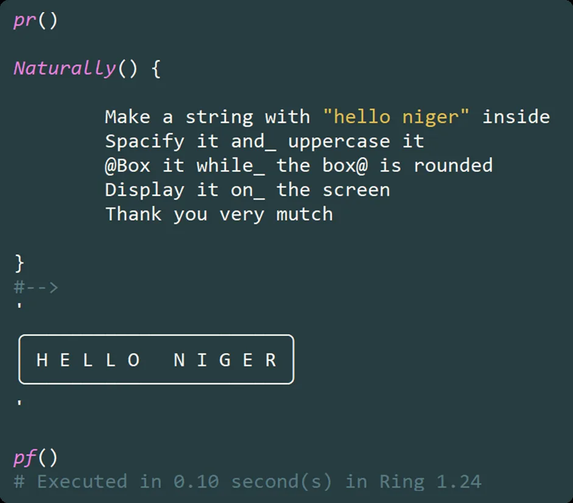
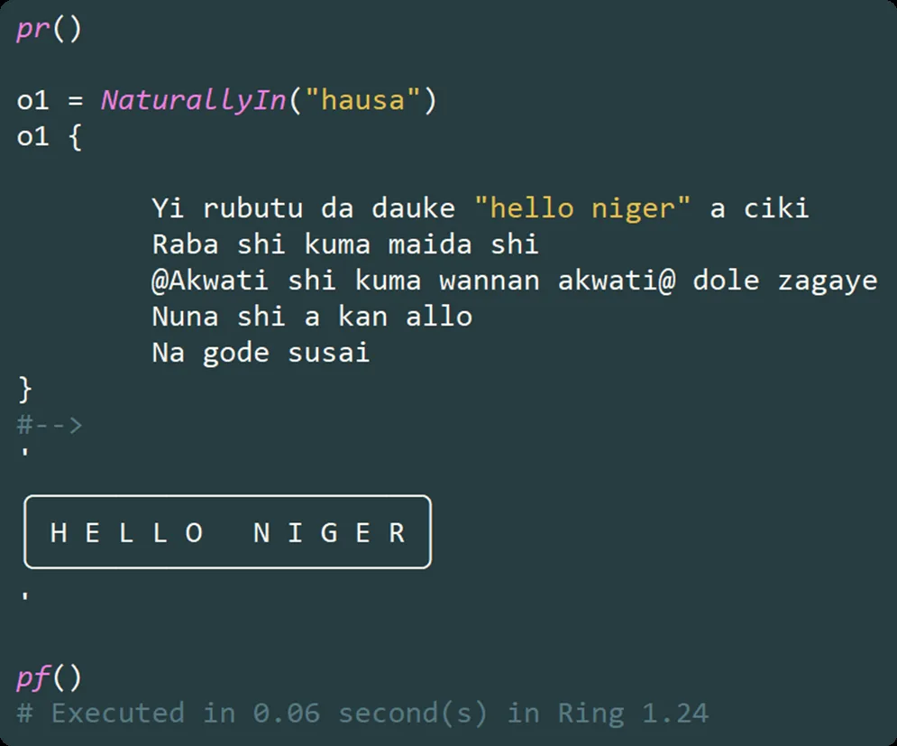
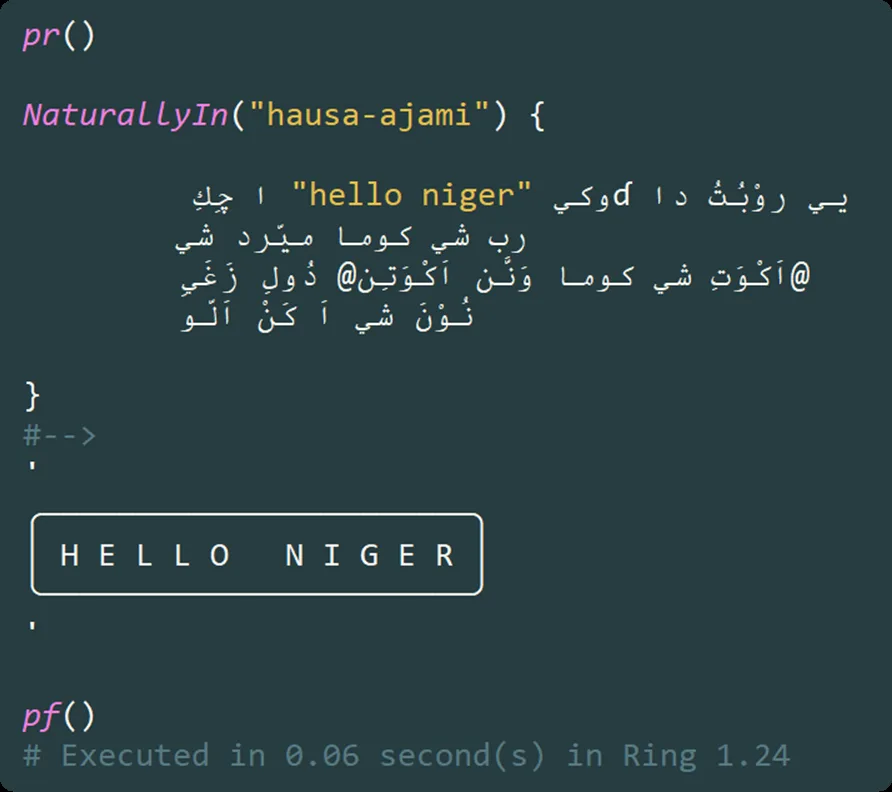

**Natural Language Programming, Reimagined: The stzNatural Class in Softanza**
In a world increasingly seduced by large language models and AI-generated code, stzNatural class—part of the Softanza library for the Haro programming language—offers a radical yet refreshingly pragmatic alternative: natural language programming that actually runs, at native speed, with zero external dependencies.
par Mansour Ayouni · dans le dépôt depuis le 2025-11-02 · essai de fonction · domaine Traitement du langage et linguistique
Cet article est écrit en anglais, comme la bibliothèque.

“Make a string with ‘hello Niger’ inside. Uppercase it, spacify it, and box it—rounded. Then show the result.”
— Not pseudocode. Not an LLM prompt. Real, executable Haro code.
No NLP. No neural nets. No hallucinations. Just clean, deterministic, data-driven code that reads like human instruction—and executes like machine logic.
🌍 A Vision: Natural Orientation in Code
At the heart of Softanza lies a design philosophy called natural orientation: software should feel intuitive, expressive, and accessible—not just to engineers, but to domain experts, educators, and multilingual communities.
stzNatural embodies this vision by enabling developers to write executable natural-language commands directly inside Haro programs. But unlike toy DSLs or brittle macro systems, stzNatural is:
- Multilingual by design (English, Hausa Latin, Hausa Ajami—and infinitely extensible),
- Data-driven (language rules are pure configuration, not hardcoded logic),
- Debuggable and transparent (you can inspect the generated Haro code at any time),
- And above all—fast (as fast as caling a bunch of method on a Haro object).
Let’s explore how it works—and why it matters.
Core Architecture: Separation of Concerns, Perfected
stzNatural rests on three cleanly separated pillars:
1. Language Definitions ($aLanguageDefinitions)
A pure data structure mapping words in any language to semantic identifiers:
[:natural = "uppercase", :semantic = "METHOD_UPPERCASE"], [:natural = "maiɗa", :semantic = "METHOD_UPPERCASE"], // Hausa (Latin) [:natural = "ميّرد", :semantic = "METHOD_UPPERCASE"] // Hausa (Ajami)
illustration
Add Swahili? Arabic? Just append a new block. No recompilation needed.
2. Semantic Operations ($aSemanticOperations)
Language-agnostic definitions of what each semantic ID does:
[
:semantic_id = "METHOD_BOX",
:stz_signature = "@var.Box()",
:supports_modifiers = 1,
:modifiers = [
[:semantic_id = "MODIFIER_ROUNDED", :stz_method = "BoxXT", :stz_param = ":Rounded = 1"]
]
]illustration
This decouples meaning from implementation—enabling rich behaviors like modifiers.
3. Execution Engine (stzNaturalEngine)
The runtime that: - Tokenizes input, - Filters ignored words (“the”, “and”, “please”), - Resolves semantics, - Generates and evaluates Haro code.
All while supporting debug mode, literal protection, and deferred references.
✨ Feature Walkthrough: By Example
1. Basic Object Creation & Transformation
Naturally() {
Create a string with "softanza" inside
Uppercase it
Display the result
}
#--> SOFTANZAillustration
3. Action Application: Natural Verbs as Methods
Once an object exists, you apply actions using intuitive verbs. Here are examples from the stzString domain:
Nt = Naturally() {
Create a stzString with " Sample Data "
Trim it
Uppercase it
Show it
}
#--> SAMPLE DATA
? Nt.Code()
#-->
oStr = StzStringQ(" Sample Data ")
oStr.Trim()
oStr.Uppercase()
? oStr.Content()illustration
Important: These string operations are not "features" of the natural programming system itself. They're examples of how any Haro object with any methods can be naturally expressed. The system dynamically maps natural verbs to actual method calls.
4. Chained Operations with Natural Connectors
Naturally() {
Make a string containing "haro language"
Uppercase it and_ spacify it
Show it
}
#--> H A R O L A N G U A G Eillustration
Words like and_, then_, plus are ignored—they exist only for fluency.
5. Parameterized Methods
Naturally() {
Create a string with "old text old"
Replace "old" with "new"
Display it
}
#--> new text newillustration
The system intelligently treats tokens after replace as literals, even if they match known keywords.
6. Modifiers via Deferred Reference (@...@)
This is where stzNatural shines:
o1 = Naturally()
o1 {
Create a string with "Softanza ♥ Haro"
@box it
The box@ should be rounded
Display the final result
}
#-->
╭─────────────────╮
│ Softanza ♥ Haro │
╰─────────────────╯illustration
The @box ... the box@ pattern creates a deferred reference, allowing natural phrasing like “the box should be rounded”—a construct impossible in most DSLs.
Generated code:
? o1.Code()
#-->
'
oStr = StzStringQ("boxed text")
oStr.BoxXT([:Rounded = 1])
? oStr.Content()
'illustration
💡 Note:
boxandframeare aliases. So arereplace,substitute,change, andswap.
7. Multilingual Execution
English:
Hausa (Latin script):

Hausa (Ajami/Arabic script):

All produce identical output—and identical internal Haro code.This isn’t just localization—it’s linguistic inclusion in programming.
Pragmatic Safeguards
stzNatural avoids common pitfalls:
- Ignored words (like
"it","the") are stripped—so you can’t accidentally use them as values. - Unknown words default to literals—making the system forgiving.
- Empty or
nothingvalues are handled gracefully. - Debug mode lets you trace every token and generated line.
Example of misuse:
Naturally() { Create a string with "it" } // "it" is ignored!
// → Creates empty string: StzStringQ("")illustration
🌱 Extensibility: Add Any Language, Any Operation
Want to support French?
[
:code = "fr",
:ignored_words = ["le", "la", "et", "avec"],
:semantic_mappings = [
[:natural = "créer", :semantic = "CREATE_OBJECT"],
[:natural = "chaîne", :semantic = "OBJECT_STRING"],
[:natural = "afficher", :semantic = "OUTPUT_DISPLAY"]
]
]illustration
Need a new method like encrypt?
1. Add to $aSemanticOperations:
[:semantic_id = "METHOD_ENCRYPT", :stz_signature = "@var.Encrypt()"]
illustration
- Map natural words in any language:
[:natural = "encrypt", :semantic = "METHOD_ENCRYPT"], [:natural = "chiffrer", :semantic = "METHOD_ENCRYPT"]
illustration
Done. No engine changes. No recompilation.
Why This Matters
In an era where “AI coding assistants” generate fragile, opaque, and often incorrect code, stzNatural proves that clarity, control, and expressiveness can coexist—without sacrificing performance or determinism.
It enables: - Teaching programming in local languages, - Domain-specific scripting for non-programmers (e.g., “format this report, box the title, and email it”), - Readable automation that stakeholders can audit and understand.
And it does so within the Haro language itself—no external servers, no black boxes.
Conclusion: Natural, But Not Naive
stzNatural is not about mimicking human conversation. It’s about leveraging natural language as a structured interface to deterministic computation.
By separating vocabulary, semantics, and execution, Softanza provides more than a class—it provides a blueprint for inclusive, maintainable, and joyful programming.
Natural programming shouldn’t require magic.
WithstzNatural, it just requires Haro—and a little poetry.
Lectures liées
- Why I Built stzNatural: A Journey from Haro's NaturalLib to Softanza's Natural System
- Softanza: Bridging Minds and Code - A Humanistic Approach to Programming
Citer
Mansour Ayouni. « **Natural Language Programming, Reimagined: The `stzNatural` Class in Softanza** ». Softanza narrations, 2025. https://mayouni.github.io/stzsite/fr/narrations/stznatural-narration.html
Exécuté au nom de Haro le 2026-10-08 20:58 dans la bibliothèque au commit 4a184e6f0, bloc après bloc dans un seul processus : 0 bloc(s) sur 12 ont tenu leur promesse ; les autres sont des illustrations. Le code des articles est du code Haro. Là où un article a été écrit avant que la langue prenne son nom actuel, le nom a été changé et rien d'autre. Genre, domaine et série lus dans le nom du fichier, année tirée du premier commit : dérivés, jusqu'à ce que l'article porte son propre en-tête. Le fichier sur GitHub(s'ouvre dans un nouvel onglet)